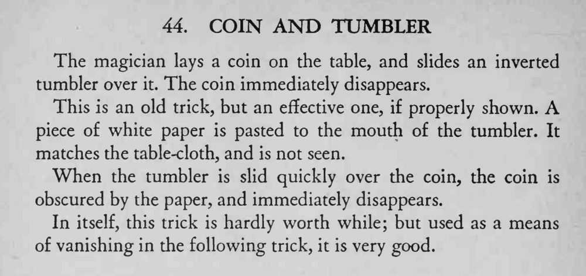

硬币放在桌上，用倒扣的平底杯一滑过去，硬币立刻不见了。
纸的颜色必须与桌布完全一致，滑杯动作要快，不能停顿。

The magician lays a coin on the table, and slides an inverted tumbler over it. The coin immediately disappears. This is an old trick, but an effective one, if properly shown. piece of white paper is pasted to the mouth of the tumbler. It matches the table-cloth, and is not seen. When the tumbler is slid quickly over the coin, the coin is obscured by the paper, and immediately disappears. In itself, this trick is hardly worth while; but used as a means of vanishing in the following trick, it is very good.